Build a web application with React and Kotlin/JS — tutorial
This tutorial will teach you how to build a browser application with Kotlin/JS and the
React
framework. You will:
Complete common tasks associated with building a typical React application.
Explore how
Kotlin's DSLs
can be used to help express concepts concisely and uniformly without sacrificing readability, allowing you to write a full-fledged application completely in Kotlin.
Learn how to use ready-made npm components, use external libraries, and publish the final application.
The output will be a
KotlinConf Explorer
web app dedicated to the
KotlinConf
event, with links to conference talks. Users will be able to watch all the talks on one page and mark them as seen or unseen.
The tutorial assumes you have prior knowledge of Kotlin and basic knowledge of HTML and CSS. Understanding the basic concepts behind React may help you understand some sample code, but it is not strictly required.
Clone the
project template
and open it in IntelliJ IDEA. The template includes a basic Kotlin Multiplatform Gradle project with all required configurations and dependencies
Dependencies and tasks in the
build.gradle.kts
file:
Kotlin/JS projects are automatically bundled with all of your code and its dependencies into a single JavaScript file with the same name as the project,
confexplorer.js
, when you build them. As a typical
JavaScript convention
, the content of the body (including the
root
div) is loaded first to ensure that the browser loads all page elements before the scripts.
A code snippet in
src/jsMain/kotlin/Main.kt
:
import kotlinx.browser.document
fun main() {
document.bgColor = "red"
}
Run the development server
By default, the Kotlin Multiplatform Gradle plugin comes with support for an embedded
webpack-dev-server
, allowing you to run the application from the IDE without manually setting up any servers.
To test that the program successfully runs in the browser, start the development server by invoking the
run
or
browserDevelopmentRun
task (available in the
other
or
kotlin browser
directory) from the Gradle tool window inside IntelliJ IDEA:
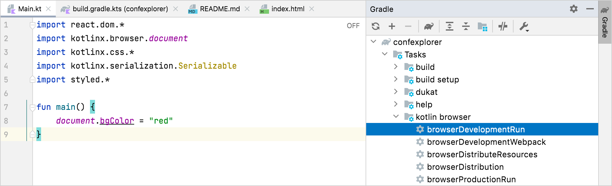
To run the program from the Terminal, use
./gradlew run
instead.
When the project is compiled and bundled, a blank red page will appear in a browser window:
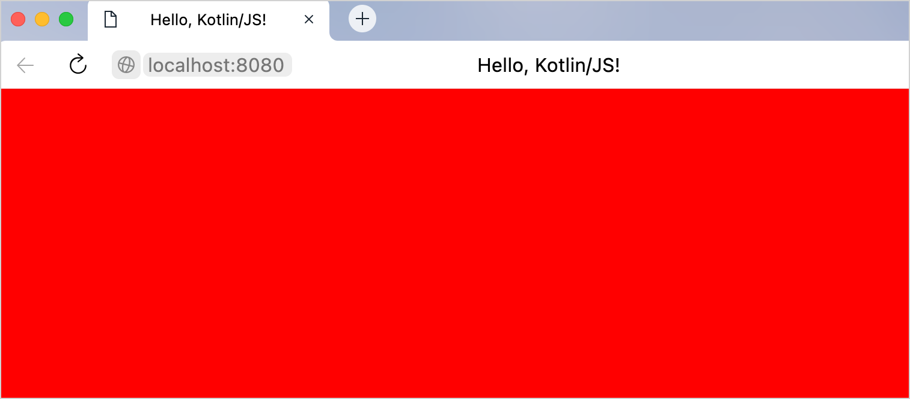
Enable hot reload / continuous mode
Configure
continuous compilation
mode so you don't have to manually compile and execute your project every time you make changes. Make sure to stop all running development server instances before proceeding.
Edit the run configuration that IntelliJ IDEA automatically generates after running the Gradle
run
task for the first time:
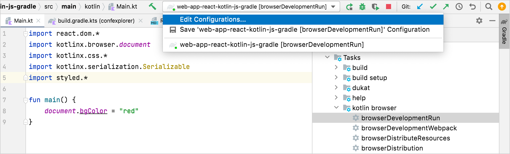
In the
Run/Debug Configurations
dialog, add the
--continuous
option to the arguments for the run configuration:
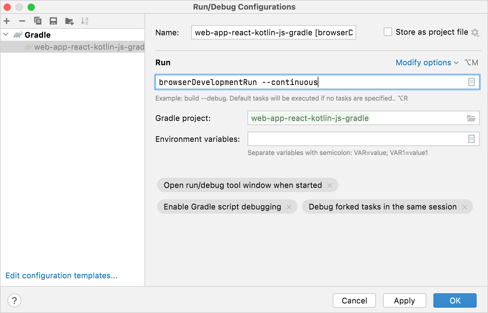
After applying the changes, you can use the
Run
button inside IntelliJ IDEA to start the development server back up. To run the continuous Gradle builds from the Terminal, use
./gradlew run --continuous
instead.
To test this feature, change the color of the page to blue in the
Main.kt
file while the Gradle task is running:
document.bgColor = "blue"
The project then recompiles, and after a reload the browser page will be the new color.
You can keep the development server running in continuous mode during the development process. It will automatically rebuild and reload the page when you make changes.
Create a web app draft
Add the first static page with React
To make your app display a simple message, replace the code in the
Main.kt
file with the following:
The
render()
function instructs
kotlin-react-dom
to render the first HTML element inside a
fragment
to the
root
element. This element is a container defined in
src/jsMain/resources/index.html
, which was included in the template.
The content is an
<h1>
header and uses a typesafe DSL to render HTML.
h1
is a function that takes a lambda parameter. When you add the
+
sign in front of a string literal, the
unaryPlus()
function is actually invoked using
operator overloading
. It appends the string to the enclosed HTML element.
When the project recompiles, the browser displays this HTML page:
Convert HTML to Kotlin's typesafe HTML DSL
The Kotlin
wrappers
for React come with a
domain-specific language (DSL)
that makes it possible to write HTML in pure Kotlin code. In this way, it's similar to
JSX
from JavaScript. However, with this markup being Kotlin, you get all the benefits of a statically typed language, such as autocomplete or type checking.
Compare the classic HTML code for your future web app and its typesafe variant in Kotlin:
<h1>KotlinConf Explorer</h1>
<div>
<h3>Videos to watch</h3>
<p>John Doe: Building and breaking things</p>
<p>Jane Smith: The development process</p>
<p>Matt Miller: The Web 7.0</p>
<h3>Videos watched</h3>
<p>Tom Jerry: Mouseless development</p>
</div>
<div>
<h3>John Doe: Building and breaking things</h3>
<img src="https://via.placeholder.com/640x360.png?text=Video+Player+Placeholder">
</div>
h1 {
+"KotlinConf Explorer"
}
div {
h3 {
+"Videos to watch"
}
p {
+ "John Doe: Building and breaking things"
}
p {
+"Jane Smith: The development process"
}
p {
+"Matt Miller: The Web 7.0"
}
h3 {
+"Videos watched"
}
p {
+"Tom Jerry: Mouseless development"
}
}
div {
h3 {
+"John Doe: Building and breaking things"
}
img {
src = "https://via.placeholder.com/640x360.png?text=Video+Player+Placeholder"
}
}
Copy the Kotlin code and update the
Fragment.create()
function call inside the
main()
function, replacing the previous
h1
tag.
Wait for the browser to reload. The page should now look like this:
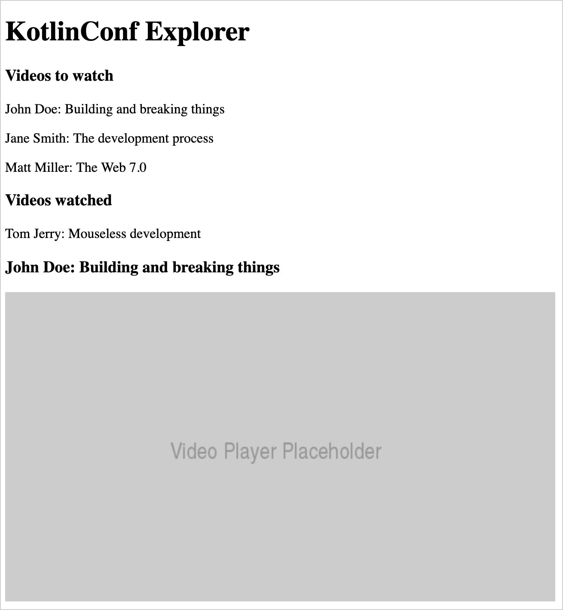
Add videos using Kotlin constructs in markup
There are some advantages to writing HTML in Kotlin using this DSL. You can manipulate your app using regular Kotlin constructs, like loops, conditions, collections, and string interpolation.
You can now replace the hardcoded list of videos with a list of Kotlin objects:
In
Main.kt
, create a
Video
data class
to keep all video attributes in one place:
data class Video(
val id: Int,
val title: String,
val speaker: String,
val videoUrl: String
)
Fill up the two lists, for unwatched videos and watched videos, respectively. Add these declarations at file-level in
Main.kt
:
val unwatchedVideos = listOf(
Video(1, "Opening Keynote", "Andrey Breslav", "https://youtu.be/PsaFVLr8t4E"),
Video(2, "Dissecting the stdlib", "Huyen Tue Dao", "https://youtu.be/Fzt_9I733Yg"),
Video(3, "Kotlin and Spring Boot", "Nicolas Frankel", "https://youtu.be/pSiZVAeReeg")
)
val watchedVideos = listOf(
Video(4, "Creating Internal DSLs in Kotlin", "Venkat Subramaniam", "https://youtu.be/JzTeAM8N1-o")
)
To use these videos on the page, write a Kotlin
for
loop to iterate over the collection of unwatched
Video
objects. Replace the three
p
tags under "Videos to watch" with the following snippet:
for (video in unwatchedVideos) {
p {
+"${video.speaker}: ${video.title}"
}
}
Apply the same process to modify the code for the single tag following "Videos watched" as well:
for (video in watchedVideos) {
p {
+"${video.speaker}: ${video.title}"
}
}
Wait for the browser to reload. The layout should stay the same as before. You can add some more videos to the list to make sure that the loop is working.
Add styles with typesafe CSS
The
kotlin-emotion
wrapper for the
Emotion
library makes it possible to specify CSS attributes – even dynamic ones – right alongside HTML with JavaScript. Conceptually, that makes it similar to
CSS-in-JS
– but for Kotlin. The benefit of using a DSL is that you can use Kotlin code constructs to express formatting rules.
The template project for this tutorial already includes the dependency needed to use
kotlin-emotion
:
With
kotlin-emotion
, you can specify a
css
block inside HTML elements
div
and
h3
, where you can define the styles.
To move the video player to the top right-hand corner of the page, use CSS and adjust the code for the video player (the last
div
in the snippet):
div {
css {
position = Position.absolute
top = 10.px
right = 10.px
}
h3 {
+"John Doe: Building and breaking things"
}
img {
src = "https://via.placeholder.com/640x360.png?text=Video+Player+Placeholder"
}
}
Feel free to experiment with some other styles. For example, you could change the
fontFamily
or add some
color
to your UI.
Design app components
The basic building blocks in React are called
components
. Components themselves can also be composed of other, smaller components. By combining components, you build your application. If you structure components to be generic and reusable, you'll be able to use them in multiple parts of the app without duplicating code or logic.
The content of the
render()
function generally describes a basic component. The current layout of your application looks like this:
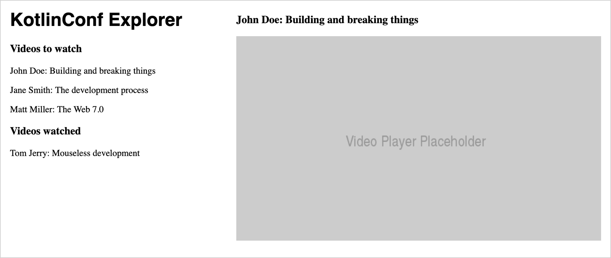
If you decompose your application into individual components, you'll end up with a more structured layout in which each component handles its responsibilities:
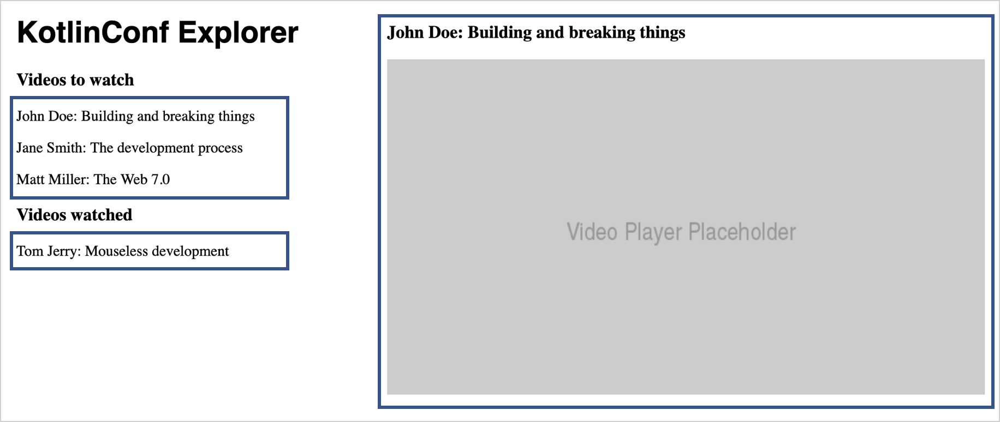
Components encapsulate a particular functionality. Using components shortens source code and makes it easier to read and understand.
Add the main component
To start creating the application's structure, first explicitly specify
App
, the main component for rendering to the
root
element:
Create a new
App.kt
file in the
src/jsMain/kotlin
folder.
Inside this file, add the following snippet and move the typesafe HTML from
Main.kt
into it:
import kotlinx.coroutines.async
import react.*
import react.dom.*
import kotlinx.browser.window
import kotlinx.coroutines.*
import kotlinx.serialization.decodeFromString
import kotlinx.serialization.json.Json
import emotion.react.css
import csstype.Position
import csstype.px
import react.dom.html.ReactHTML.h1
import react.dom.html.ReactHTML.h3
import react.dom.html.ReactHTML.div
import react.dom.html.ReactHTML.p
import react.dom.html.ReactHTML.img
val App = FC<Props> {
// typesafe HTML goes here, starting with the first h1 tag!
}
Since the
watchedVideos
and
unwatchedVideos
lists each contain a list of videos, it makes sense to create a single reusable component, and only adjust the content displayed in the lists.
The
VideoList
component follows the same pattern as the
App
component. It uses the
FC
builder function, and contains the code from the
unwatchedVideos
list.
Create a new
VideoList.kt
file in the
src/jsMain/kotlin
folder and add the following code:
import kotlinx.browser.window
import react.*
import react.dom.*
import react.dom.html.ReactHTML.p
val VideoList = FC<Props> {
for (video in unwatchedVideos) {
p {
+"${video.speaker}: ${video.title}"
}
}
}
In
App.kt
, use the
VideoList
component by invoking it without parameters:
For now, the
App
component has no control over the content that is shown by the
VideoList
component. It's hard-coded, so you see the same list twice.
Add props to pass data between components
Since you're going to reuse the
VideoList
component, you'll need to be able to fill it with different content. You can add the ability to pass the list of items as an attribute to the component. In React, these attributes are called
props
. When the props of a component are changed in React, the framework automatically re-renders the component.
For
VideoList
, you'll need a prop containing the list of videos to be shown. Define an interface that holds all the props which can be passed to a
VideoList
component:
Add the following definition to the
VideoList.kt
file:
external interface VideoListProps : Props {
var videos: List<Video>
}
The
external
modifier tells the compiler that the interface's implementation is provided externally, so it doesn't try to generate JavaScript code from the declaration.
Adjust the class definition of
VideoList
to make use of the props that are passed into the
FC
block as a parameter:
val VideoList = FC<VideoListProps> { props ->
for (video in props.videos) {
p {
key = video.id.toString()
+"${video.speaker}: ${video.title}"
}
}
}
The
key
attribute helps the React renderer figure out what to do when the value of
props.videos
changes. It uses the key to determine which parts of a list need to be refreshed and which ones stay the same. You can find more information about lists and keys in the
React guide
.
In the
App
component, make sure that the child components are instantiated with the proper attributes. In
App.kt
, replace the two loops underneath the
h3
elements with an invocation of
VideoList
together with the attributes for
unwatchedVideos
and
watchedVideos
. In the Kotlin DSL, you assign them inside a block belonging to the
VideoList
component:
After a reload, the browser will show that the lists now render correctly.
Make the list interactive
First, add an alert message that pops up when users click on a list entry. In
VideoList.kt
, add an
onClick
handler function that triggers an alert with the current video:
If you click on one of the list items in the browser window, you'll get information about the video in an alert window like this:
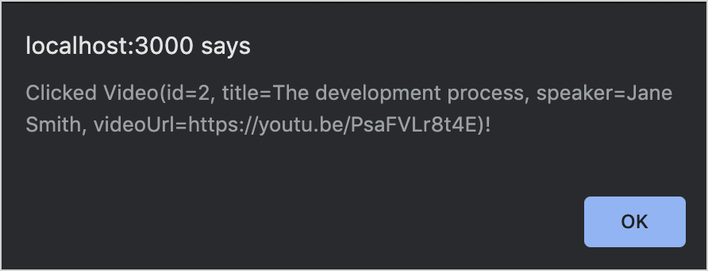
Add state to keep values
Instead of just alerting the user, you can add some functionality for highlighting the selected video with a ▶ triangle. To do that, introduce some
state
specific to this component.
State is one of the core concepts in React. In modern React (which uses the so-called
Hooks API
), state is expressed using the
useState
hook
.
Add the following code to the top of the
VideoList
declaration:
val VideoList = FC<VideoListProps> { props ->
var selectedVideo: Video? by useState(null)
// . . .
The
VideoList
functional component keeps state (a value that is independent of the current function invocation). State is nullable, and has the
Video?
type. Its default value is
null
.
The
useState()
function from React instructs the framework to keep track of state across multiple invocations of the function. For example, even though you specify a default value, React makes sure that the default value is only assigned in the beginning. When state changes, the component will re-render based on the new state.
The
by
keyword indicates that
useState()
acts as a
delegated property
. Like with any other variable, you read and write values. The implementation behind
useState()
takes care of the machinery required to make state work.
Change the
onClick
handler and the text in the
VideoList
component to look as follows:
val VideoList = FC<VideoListProps> { props ->
var selectedVideo: Video? by useState(null)
for (video in props.videos) {
p {
key = video.id.toString()
onClick = {
selectedVideo = video
}
if (video == selectedVideo) {
+"▶ "
}
+"${video.speaker}: ${video.title}"
}
}
}
When the user clicks a video, its value is assigned to the
selectedVideo
variable.
When the selected list entry is rendered, the triangle is prepended.
You can find more details about state management in the
React FAQ
.
Check the browser and click an item in the list to make sure that everything is working correctly.
Compose components
Currently, the two video lists work on their own, meaning that each list keeps track of a selected video. Users can select two videos, one in the unwatched list and one in watched, even though there's only one player:
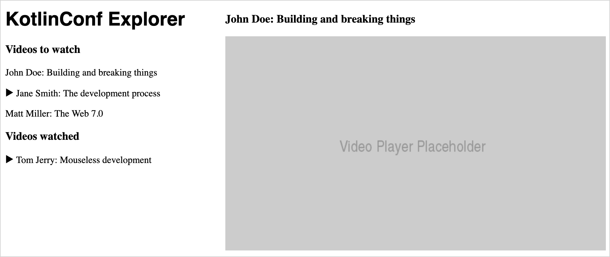
A list can't keep track of which video is selected both inside itself, and inside a sibling list. The reason is that the selected video is part not of the
list
state, but of the
application
state. This means you need to
lift
state out of the individual components.
Lift state
React makes sure that props can only be passed from a parent component to its children. This prevents components from being hard-wired together.
If a component wants to change state of a sibling component, it needs to do so via its parent. At that point, state also no longer belongs to any of the child components but to the overarching parent component.
The process of migrating state from components to their parents is called
lifting state
. For your app, add
currentVideo
as state to the
App
component:
In
App.kt
, add the following to the top of the definition of the
App
component:
val App = FC<Props> {
var currentVideo: Video? by useState(null)
// . . .
}
The
VideoList
component no longer needs to keep track of state. It will receive the current video as a prop instead.
Remove the
useState()
call in
VideoList.kt
.
Prepare the
VideoList
component to receive the selected video as a prop. To do so, expand the
VideoListProps
interface to contain the
selectedVideo
:
external interface VideoListProps : Props {
var videos: List<Video>
var selectedVideo: Video?
}
Change the condition of the triangle so that it uses
props
instead of
state
:
if (video == props.selectedVideo) {
+"▶ "
}
Pass handlers
At the moment, there's no way to assign a value to a prop, so the
onClick
function won't work the way it is currently set up. To change state of a parent component, you need to lift state again.
In React, state always flows from parent to child. So, to change the
application
state from one of the child components, you need to move the logic for handling user interaction to the parent component and then pass the logic in as a prop. Remember that in Kotlin, variables can have the
type of a function
.
Expand the
VideoListProps
interface again so that it contains a variable
onSelectVideo
, which is a function that takes a
Video
and returns
Unit
:
external interface VideoListProps : Props {
// ...
var onSelectVideo: (Video) -> Unit
}
In the
VideoList
component, use the new prop in the
onClick
handler:
onClick = {
props.onSelectVideo(video)
}
You can now delete the
selectedVideo
variable from the
VideoList
component.
Go back to the
App
component and pass
selectedVideo
and a handler for
onSelectVideo
for each of the two video lists:
VideoList {
videos = unwatchedVideos // and watchedVideos respectively
selectedVideo = currentVideo
onSelectVideo = { video ->
currentVideo = video
}
}
Repeat the previous step for the watched videos list.
Switch back to your browser and make sure that when selecting a video the selection jumps between the two lists without duplication.
Add more components
Extract the video player component
You can now create another self-contained component, a video player, which is currently a placeholder image. Your video player needs to know the talk title, the author of the talk, and the link to the video. This information is already contained in each
Video
object, so you can pass it as a prop and access its attributes.
Create a new
VideoPlayer.kt
file and add the following implementation for the
VideoPlayer
component:
import csstype.*
import react.*
import emotion.react.css
import react.dom.html.ReactHTML.button
import react.dom.html.ReactHTML.div
import react.dom.html.ReactHTML.h3
import react.dom.html.ReactHTML.img
external interface VideoPlayerProps : Props {
var video: Video
}
val VideoPlayer = FC<VideoPlayerProps> { props ->
div {
css {
position = Position.absolute
top = 10.px
right = 10.px
}
h3 {
+"${props.video.speaker}: ${props.video.title}"
}
img {
src = "https://via.placeholder.com/640x360.png?text=Video+Player+Placeholder"
}
}
}
Because the
VideoPlayerProps
interface specifies that the
VideoPlayer
component takes a non-nullable
Video
, make sure to handle this in the
App
component accordingly.
In
App.kt
, replace the previous
div
snippet for the video player with the following:
The
let
scope function
ensures that the
VideoPlayer
component is only added when
state.currentVideo
is not null.
Now clicking an entry in the list will bring up the video player and populate it with the information from the clicked entry.
Add a button and wire it
To make it possible for users to mark a video as watched or unwatched and to move it between the two lists, add a button to the
VideoPlayer
component.
Since this button will move videos between two different lists, the logic handling state change needs to be
lifted
out of the
VideoPlayer
and passed in from the parent as a prop. The button should look different based on whether the video has been watched or not. This is also information you need to pass as a prop.
Expand the
VideoPlayerProps
interface in
VideoPlayer.kt
to include properties for those two cases:
external interface VideoPlayerProps : Props {
var video: Video
var onWatchedButtonPressed: (Video) -> Unit
var unwatchedVideo: Boolean
}
You can now add the button to the actual component. Copy the following snippet into the body of the
VideoPlayer
component, between the
h3
and
img
tags:
button {
css {
display = Display.block
backgroundColor = if (props.unwatchedVideo) NamedColor.lightgreen else NamedColor.red
}
onClick = {
props.onWatchedButtonPressed(props.video)
}
if (props.unwatchedVideo) {
+"Mark as watched"
} else {
+"Mark as unwatched"
}
}
With the help of Kotlin CSS DSL that make it possible to change styles dynamically, you can change the color of the button using a basic Kotlin
if
expression.
Move video lists to the application state
Now it's time to adjust the
VideoPlayer
usage site in the
App
component. When the button is clicked, a video should be moved from the unwatched list to the watched list or vice versa. Since these lists can now actually change, move them into the application state:
In
App.kt
, add the following properties with
useState()
calls to the top of the
App
component:
val App = FC<Props> {
var currentVideo: Video? by useState(null)
var unwatchedVideos: List<Video> by useState(listOf(
Video(1, "Opening Keynote", "Andrey Breslav", "https://youtu.be/PsaFVLr8t4E"),
Video(2, "Dissecting the stdlib", "Huyen Tue Dao", "https://youtu.be/Fzt_9I733Yg"),
Video(3, "Kotlin and Spring Boot", "Nicolas Frankel", "https://youtu.be/pSiZVAeReeg")
))
var watchedVideos: List<Video> by useState(listOf(
Video(4, "Creating Internal DSLs in Kotlin", "Venkat Subramaniam", "https://youtu.be/JzTeAM8N1-o")
))
// . . .
}
Since all the demo data is included in the default values for
watchedVideos
and
unwatchedVideos
directly, you no longer need the file-level declarations. In
Main.kt
, delete the declarations for
watchedVideos
and
unwatchedVideos
.
Change the call-site for
VideoPlayer
in the
App
component that belongs to the video player to look like this:
VideoPlayer {
video = curr
unwatchedVideo = curr in unwatchedVideos
onWatchedButtonPressed = {
if (video in unwatchedVideos) {
unwatchedVideos = unwatchedVideos - video
watchedVideos = watchedVideos + video
} else {
watchedVideos = watchedVideos - video
unwatchedVideos = unwatchedVideos + video
}
}
}
Go back to the browser, select a video, and press the button a few times. The video will jump between the two lists.
Use packages from npm
To make the app usable, you still need a video player that actually plays videos and some buttons to help people share the content.
React has a rich ecosystem with a lot of pre-made components you can use instead of building this functionality yourself.
Add the video player component
To replace the placeholder video component with an actual YouTube player, use the
react-player
package from npm. It can play videos and allows you to control the appearance of the player.
For the component documentation and the API description, see its
README
in GitHub.
Check the
build.gradle.kts
file. The
react-player
package should be already included:
dependencies {
// ...
// Video Player
implementation(npm("react-player", "2.12.0"))
// ...
}
As you can see, npm dependencies can be added to a Kotlin/JS project by using the
npm()
function in the
dependencies
block of the build file. The Gradle plugin then takes care of downloading and installing these dependencies for you. To do so, it uses its own bundled installation of the
Yarn
package manager.
To use the JavaScript package from inside the React application, it's necessary to tell the Kotlin compiler what to expect by providing it with
external declarations
.
Create a new
ReactYouTube.kt
file and add the following content:
@file:JsModule("react-player")
@file:JsNonModule
import react.*
@JsName("default")
external val ReactPlayer: ComponentClass<dynamic>
When the compiler sees an external declaration like
ReactPlayer
, it assumes that the implementation for the corresponding class is provided by the dependency and doesn't generate code for it.
The last two lines are equivalent to a JavaScript import like
require("react-player").default;
. They tell the compiler that it's certain that a component will conform to
ComponentClass<dynamic>
at runtime.
However, in this configuration, the generic type for the props accepted by
ReactPlayer
is set to
dynamic
. That means the compiler will accept any code, at the risk of breaking things at runtime.
A better alternative is to create an
external interface
that specifies what kind of properties belong to the props for this external component. You can learn about the props' interface in the
README
for the component. In this case, use the
url
and
controls
props:
Adjust the content of
ReactYouTube.kt
by replacing
dynamic
with an external interface:
@file:JsModule("react-player")
@file:JsNonModule
import react.*
@JsName("default")
external val ReactPlayer: ComponentClass<ReactPlayerProps>
external interface ReactPlayerProps : Props {
var url: String
var controls: Boolean
}
You can now use the new
ReactPlayer
to replace the gray placeholder rectangle in the
VideoPlayer
component. In
VideoPlayer.kt
, replace the
img
tag with the following snippet:
An easy way to share the application's content is to have social share buttons for messengers and email. You can use an off-the-shelf React component for this as well, for example,
react-share
:
Check the
build.gradle.kts
file. This npm library should already be included:
To use
react-share
from Kotlin, you'll need to write more basic external declarations. The
examples on GitHub
show that a share button consists of two React components:
EmailShareButton
and
EmailIcon
, for example. Different types of share buttons and icons all have the same kind of interface. You'll create the external declarations for each component the same way you already did for the video player.
Add the following code to a new
ReactShare.kt
file:
@file:JsModule("react-share")
@file:JsNonModule
import react.ComponentClass
import react.Props
@JsName("EmailIcon")
external val EmailIcon: ComponentClass<IconProps>
@JsName("EmailShareButton")
external val EmailShareButton: ComponentClass<ShareButtonProps>
@JsName("TelegramIcon")
external val TelegramIcon: ComponentClass<IconProps>
@JsName("TelegramShareButton")
external val TelegramShareButton: ComponentClass<ShareButtonProps>
external interface ShareButtonProps : Props {
var url: String
}
external interface IconProps : Props {
var size: Int
var round: Boolean
}
Add new components into the user interface of the application. In
VideoPlayer.kt
, add two share buttons in a
div
right above the usage of
ReactPlayer
:
You can now check your browser and see whether the buttons actually work. When clicking on the button, a
share window
should appear with the URL of the video. If the buttons don't show up or work, you may need to disable your ad and social media blocker.
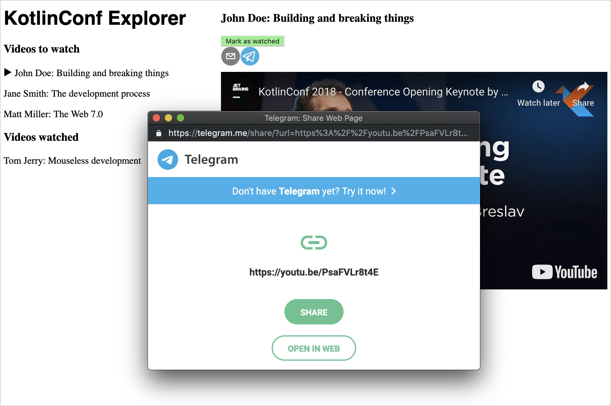
Feel free to repeat this step with share buttons for other social networks available in
react-share
.
Use an external REST API
You can now replace the hard-coded demo data with some real data from a REST API in the app.
For this tutorial, there's a
small API
. It offers only a single endpoint,
videos
, and takes a numeric parameter to access an element from the list. If you visit the API with your browser, you will see that the objects returned from the API have the same structure as
Video
objects.
Use JS functionality from Kotlin
Browsers already come with a large variety of
Web APIs
. You can also use them from Kotlin/JS, since it includes wrappers for these APIs out of the box. One example is the
fetch API
, which is used for making HTTP requests.
The first potential issue is that browser APIs like
fetch()
use
callbacks
to perform non-blocking operations. When multiple callbacks are supposed to run one after the other, they need to be nested. Naturally, the code gets heavily indented, with more and more pieces of functionality stacked inside each other, which makes it harder to read.
To overcome this, you can use Kotlin's coroutines, a better approach for such functionality.
The second issue arises from the dynamically typed nature of JavaScript. There are no guarantees about the type of data returned from the external API. To solve this, you can use the
kotlinx.serialization
library.
Check the
build.gradle.kts
file. The relevant snippet should already exist:
As preparation for fetching the first video, it's necessary to tell the serialization library about the
Video
class. In
Main.kt
, add the
@Serializable
annotation to its definition:
@Serializable
data class Video(
val id: Int,
val title: String,
val speaker: String,
val videoUrl: String
)
Fetch videos
To fetch a video from the API, add the following function in
App.kt
(or a new file):
suspend fun fetchVideo(id: Int): Video {
val response = window
.fetch("https://my-json-server.typicode.com/kotlin-hands-on/kotlinconf-json/videos/$id")
.await()
.text()
.await()
return Json.decodeFromString(response)
}
Suspending function
fetch()
fetches a video with a given
id
from the API. This response may take a while, so you
await()
the result. Next,
text()
, which uses a callback, reads the body from the response. Then you
await()
its completion.
Before returning the value of the function, you pass it to
Json.decodeFromString
, a function from
kotlinx.coroutines
. It converts the JSON text you received from the request into a Kotlin object with the appropriate fields.
The
window.fetch
function call returns a
Promise
object. You normally would have to define a callback handler that gets invoked once the
Promise
is resolved and a result is available. However, with coroutines, you can
await()
those promises. Whenever a function like
await()
is called, the method stops (suspends) its execution. Its execution continues once the
Promise
can be resolved.
To give users a selection of videos, define the
fetchVideos()
function, which will fetch 25 videos from the same API as above. To run all the requests concurrently, use the
async
functionality provided by Kotlin's coroutines:
Add the following implementation to your
App.kt
:
suspend fun fetchVideos(): List<Video> = coroutineScope {
(1..25).map { id ->
async {
fetchVideo(id)
}
}.awaitAll()
}
Following the principle of
structured concurrency
, the implementation is wrapped in a
coroutineScope
. You can then start 25 asynchronous tasks (one per request) and wait for all of them to complete.
You can now add data to your application. Add the definition for a
mainScope
, and change your
App
component so it starts with the following snippet. Don't forget to replace demo values with
emptyLists
instances as well:
val mainScope = MainScope()
val App = FC<Props> {
var currentVideo: Video? by useState(null)
var unwatchedVideos: List<Video> by useState(emptyList())
var watchedVideos: List<Video> by useState(emptyList())
useEffectOnce {
mainScope.launch {
unwatchedVideos = fetchVideos()
}
}
// . . .
The
MainScope()
is a part of Kotlin's structured concurrency model and creates the scope for asynchronous tasks to run in.
useEffectOnce
is another React
hook
(specifically, a simplified version of the
useEffect
hook). It indicates that the component performs a
side effect
. It doesn't just render itself but also communicates over the network.
Check your browser. The application should show actual data:
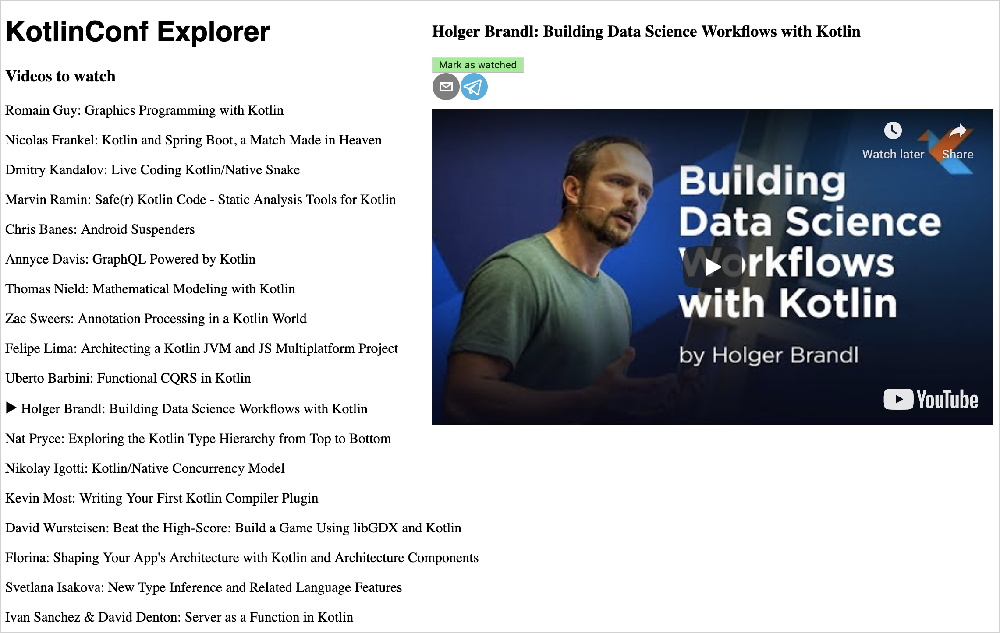
When you load the page:
The code of the
App
component will be invoked. This starts the code in the
useEffectOnce
block.
The
App
component is rendered with empty lists for the watched and unwatched videos.
When the API requests finish, the
useEffectOnce
block assigns it to the
App
component's state. This triggers a re-render.
The code of the
App
component will be invoked again, but the
useEffectOnce
block
will not
run for a second time.
If you want to get an in-depth understanding of how coroutines work, check out this
tutorial on coroutines
.
Deploy to production and the cloud
It's time to get the application published to the cloud and make it accessible to other people.
Package a production build
To package all assets in production mode, run the
build
task in Gradle via the tool window in IntelliJ IDEA or by running
./gradlew build
. This generates an optimized project build, applying various improvements such as DCE (dead code elimination).
Once the build has finished, you can find all the files needed for deployment in
/build/dist
. They include the JavaScript files, HTML files, and other resources required to run the application. You can put them on a static HTTP server, serve them using GitHub Pages, or host them on a cloud provider of your choice.
Deploy to Heroku
Heroku makes it quite simple to spin up an application that is reachable under its own domain. Their free tier should be sufficient for development purposes.
Unlike a regular JVM application that would run on Heroku (one written with Ktor or Spring Boot, for example), your app generates static HTML pages and JavaScript files that need to be served accordingly. You can adjust the required buildpacks to serve the program properly:
To allow the
heroku/gradle
buildpack to run properly, a
stage
task needs to be in the
build.gradle.kts
file. This task is equivalent to the
build
task, and the corresponding alias is already included at the bottom of the file:
Add a new
static.json
file to the project root to configure the
buildpack-static
.
Add the
root
property inside the file:
{
"root": "build/distributions"
}
You can now trigger a deployment, for example, by running the following command:
git add -A
git commit -m "add stage task and static content root configuration"
git push heroku master
If the deployment is successful, you will see the URL people can use to reach the application on the internet.
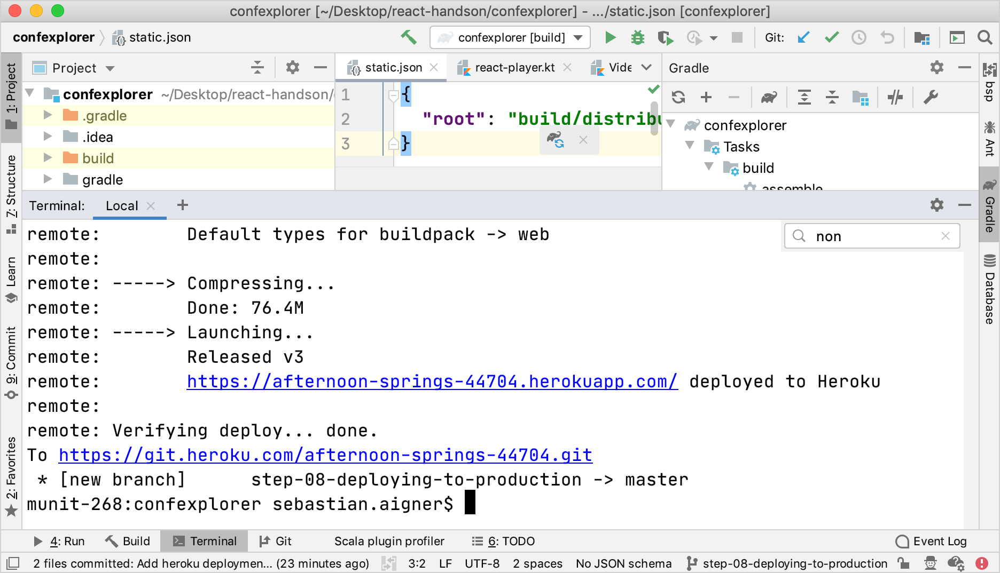
What's next
Add more features
You can use the resulting app as a jumping-off point to explore more advanced topics in the realm of React, Kotlin/JS, and more.
Search
. You can add a search field to filter the list of talks – by title or by author, for example. Learn about how
HTML form elements work in React
.
Persistence
. Currently, the application loses track of the viewer's watch list every time the page gets reloaded. Consider building your own backend, using one of the web frameworks available for Kotlin (such as
Ktor
). Alternatively, look into ways to
store information on the client
.
Complex APIs
. Lots of datasets and APIs are available. You can pull all sorts of data into your application. For example, you can build a visualizer for
cat photos
or a
royalty-free stock photo API
.
Improve the style: responsiveness and grids
The application design is still very simple and won't look great on mobile devices or in narrow windows. Explore more of the CSS DSL to make the app more accessible.
Join the community and get help
The best way to report problems and get help is the
kotlin-wrappers issue tracker
. If you can't find a ticket for your issue, feel free to file a new one. You can also join the official
Kotlin Slack
. There are channels for
#javascript
and
#react
.
Learn more about coroutines
If you're interested in finding out more about how you can write concurrent code, check out the tutorial on
coroutines
.
Learn more about React
Now that you know the basic React concepts and how they translate to Kotlin, you can convert some other concepts outlined in
React's documentation
into Kotlin.